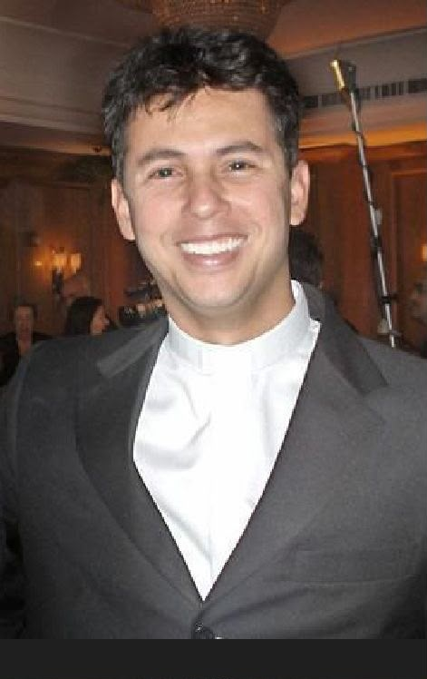

MEDICINA E SERVIÇO
Uma profissão vivida como missão.
Formação médica, Santa Casa, cuidado dos pacientes com Aids e serviço aos mais vulneráveis: uma dimensão essencial da vida de Guido.
Concluiu a graduação em Medicina no Rio de Janeiro.
Realizou serviço médico voluntário no Hospital Geral da Santa Casa da Misericórdia do Rio de Janeiro.
Em 21 de junho de 2001, especializou-se em Medicina Interna.

O MÉDICO
Cuidar da pessoa por inteiro.
As fontes da Santa Sé registram que Guido se dedicou particularmente ao cuidado de pessoas com Aids. O Vatican News descreve sua opção pela medicina geral como uma escolha que lhe permitia avaliar o paciente de modo mais completo.
Entre março de 1999 e fevereiro de 2001, exerceu uma forma de voluntariado médico no Hospital Geral da Santa Casa da Misericórdia do Rio de Janeiro, com atendimento gratuito voltado aos pobres.
JUNTO AOS MAIS VULNERÁVEIS
Ciência, presença e caridade.
A partir de 1999, junto às Missionárias da Caridade, Guido visitava pessoas pobres nas favelas do Rio e prestava serviço médico. A prática profissional e sua fé cristã se encontravam no cuidado concreto.
Mais tarde, durante sua formação, continuou ligado à Santa Casa e reativou a Pastoral da Saúde, unindo evangelização e presença junto aos enfermos.